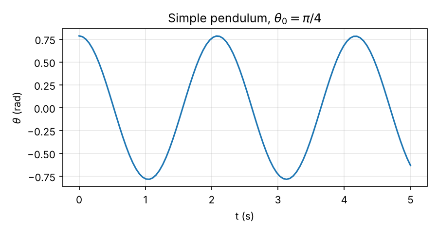

24 Assignments
This chapter collects the computational assignments for the course. Each section is a self-contained assignment: follow the steps, then do the exercises at the end.
The assignments use Python. You can run the code on your own computer (see What you need) or in Google Colab, which needs only a browser.
24.1 Solving ODEs and Animating a Simple Pendulum
Most equations of motion in this course cannot be solved by hand. In this assignment you will solve the equation of motion of a simple pendulum numerically in Python, plot the result, and turn it into an animation like the one below.
By the end you should be able to:
- Rewrite a second-order equation of motion as a system of first-order ODEs.
- Solve it with
solve_ivpfrom SciPy and plot the solution. - Convert the solution into positions and animate it with Matplotlib.
- Judge whether a numerical solution can be trusted.
24.1.1 What you need
Python 3 with three packages:
numpy(arrays and math),scipy(the ODE solver) andmatplotlib(plots and animations). Install them withpip install numpy scipy matplotlibffmpeg, the program Matplotlib uses to save the animation as an
.mp4video. On macOS install it withbrew install ffmpeg; on Windows, download it from ffmpeg.org and add it to your PATH. With Anaconda,conda install -c conda-forge ffmpegworks on any system.An editor such as VS Code, or a Jupyter notebook.
Google Colab already has numpy, scipy, matplotlib and ffmpeg, and the saved .mp4 appears in the Files panel on the left. In a notebook, an animation does not play with plt.show(). Display it with these two lines instead:
from IPython.display import HTML
HTML(ani.to_jshtml())24.1.2 Step 1: The equation of motion
In Example: Nonlinear Pendulum we found the equation of motion of a particle of mass \(m\) on a massless string of length \(\ell\): \[\begin{align} \ddot{\theta} + \frac{g}{\ell}\sin(\theta) = 0, \end{align}\] where \(\theta\) is measured from the downward vertical.
This equation is nonlinear because of \(\sin(\theta)\), and it has no solution in terms of elementary functions. We need its solution \(\theta(t)\) for given initial conditions \(\theta(0) = \theta_0\) and \(\dot{\theta}(0) = \dot{\theta}_0\). This is an initial value problem.
24.1.3 Step 2: Rewrite it as a first-order system
Numerical ODE solvers work with systems of first-order equations, \(\dot{\bf x} = {\bf f}(t, {\bf x})\). To bring our equation to this form, define the state \[\begin{align} x_1 = \theta, \qquad x_2 = \dot{\theta}. \end{align}\] Differentiating each and using the equation of motion gives \[\begin{align} \dot{x}_1 &= x_2, \\ \dot{x}_2 &= -\frac{g}{\ell}\sin(x_1), \end{align}\] with initial conditions \(x_1(0) = \theta_0\) and \(x_2(0) = \dot{\theta}_0\).
Question: How many first-order equations would you need for a double pendulum, which has two degrees of freedom?
Four. Each degree of freedom contributes a coordinate and its rate: \(x_1 = \theta_1\), \(x_2 = \theta_2\), \(x_3 = \dot{\theta}_1\), \(x_4 = \dot{\theta}_2\). In general, \(n\) second-order equations become \(2n\) first-order equations.
24.1.4 Step 3: Solve with solve_ivp
First, import the packages and set the parameters.
import numpy as np
from scipy.integrate import solve_ivp
import matplotlib.pyplot as plt
import matplotlib.animation as animation
g = 9.81 # Gravitational acceleration in SI units
l = 1 # Length of pendulum chord in metersNext, write the right-hand side \({\bf f}(t, {\bf x})\) as a Python function. It takes the time t and the state x = [x1, x2] and returns \([\dot{x}_1, \dot{x}_2]\). Python counts from 0, so \(x_1\) is x[0] and \(x_2\) is x[1].
# Define the ODE function
def dxdt(t, x):
xdot1 = x[1]
xdot2 = -g/l*np.sin(x[0])
return [xdot1, xdot2]Now choose the time interval and the initial conditions, and call the solver. Here the pendulum is released from rest at \(\theta_0 = \pi/4\) (45°).
# Define the time span and initial condition
t_span = (0, 5) # Time interval: from 0 to 5 s
x0 = [np.pi/4, 0] # theta(0) = pi/4, thetadot(0) = 0
# Solve the ODE
solution = solve_ivp(dxdt, t_span, x0, t_eval=np.linspace(0, 5, 100))
theta = solution.y[0]
thetadot = solution.y[1]The arguments of solve_ivp are:
| Argument | Meaning |
|---|---|
dxdt |
The function \({\bf f}(t, {\bf x})\) |
t_span |
Start and end times |
x0 |
Initial state \([\theta_0, \dot{\theta}_0]\) |
t_eval |
The times at which you want the solution stored (here 100 equally spaced times) |
The result solution holds the times in solution.t and the states in solution.y: row 0 is \(\theta\), row 1 is \(\dot{\theta}\). By default the solver uses RK45, a Runge–Kutta method that adjusts its own step size.
Plot \(\theta(t)\) to look at the solution:
plt.plot(solution.t, theta)
plt.xlabel("t (s)")
plt.ylabel("theta (rad)")
plt.show()
Question: For small angles, \(\sin(\theta) \approx \theta\) and the period is \(T_0 = 2\pi\sqrt{\ell/g} \approx 2.01\) s. Read the period off the plot above. Is it the same?
The first maximum after release is at about \(t = 2.09\) s, so the period is about \(2.09\) s, roughly 4% longer than \(T_0\). The period of the nonlinear pendulum grows with the amplitude. At \(45^\circ\), \(\sin(\theta)\) is already noticeably smaller than \(\theta\), so the restoring torque is weaker than the linear model predicts.
24.1.5 Step 4: From angle to position
To draw the pendulum we need the position of the mass. With the pivot at the origin, \(x\) to the right and \(y\) up: \[\begin{align} x = \ell\sin(\theta), \qquad y = -\ell\cos(\theta). \end{align}\]
x = l*np.sin(theta)
y = -l*np.cos(theta)theta is an array, so x and y are arrays too: one position for each of the 100 times.
24.1.6 Step 5: Animate the pendulum
An animation is a figure whose contents are updated frame by frame. First, set up the figure with the pendulum in its initial position: a line for the string and a circle for the mass.
# Set up the figure and axis
fig, ax = plt.subplots() # creating figure and axes objects
ax.set_xlim([-1.2*l, 1.2*l]) # limits of x-axis
ax.set_ylim([-1.2*l, 0.2*l]) # limits of y-axis
ax.set_aspect('equal')
# Set axis labels and title
ax.set_xlabel("x")
ax.set_ylabel("y")
ax.set_title("Animating motion of pendulum")
# Drawing a line from the origin to the mass m.
# This line represents the chord of the pendulum.
line, = ax.plot([0, x[0]], [0, y[0]], color='black')
circle = plt.Circle((x[0], y[0]), 0.1, color='blue', fill=True)
ax.add_patch(circle)set_aspect('equal')?
Without it, one unit on the \(x\)-axis and one unit on the \(y\)-axis can have different lengths on screen. The circle would look like an ellipse and the string would appear to stretch as it swings.
Next, write an update function. Matplotlib calls it once per frame with the frame number, and it moves the line and the circle to that frame’s position.
# Update function for animation
def update(frame):
line.set_xdata([0, x[frame]])
line.set_ydata([0, y[frame]])
circle.center = (x[frame], y[frame])
return line, circle,Finally, create the animation, save it as an .mp4 video and show it.
# Create animation
ani = animation.FuncAnimation(fig, update, frames=np.size(x), interval=50, blit=True)
ani.save('pendulum_animation.mp4', writer='ffmpeg', fps=20)
plt.show()frames=np.size(x)makes one frame per stored time (100 frames).interval=50shows each frame for 50 ms. Because the 100 stored times are 0.05 s apart, the animation plays in real time.fps=20sets the frame rate of the saved file, again 1/0.05 s.
If ani.save fails with a message like MovieWriter ffmpeg unavailable, Python cannot find ffmpeg. Install it (see What you need) and restart your editor or terminal.
24.1.7 The complete script
# xdot1 = x2
# xdot2 = -g/l*sin(x1)
import numpy as np
from scipy.integrate import solve_ivp
import matplotlib.pyplot as plt
import matplotlib.animation as animation
g = 9.81 # Gravitational acceleration in SI units
l = 1 # Length of pendulum chord in meters
# Define the ODE function
def dxdt(t, x):
xdot1 = x[1]
xdot2 = -g/l*np.sin(x[0])
return [xdot1, xdot2]
# Define the time span and initial condition
t_span = (0, 5) # Time interval: from 0 to 5 s
x0 = [np.pi/4, 0] # theta(0) = pi/4, thetadot(0) = 0
# Solve the ODE
solution = solve_ivp(dxdt, t_span, x0, t_eval=np.linspace(0, 5, 100))
theta = solution.y[0]
thetadot = solution.y[1]
x = l*np.sin(theta)
y = -l*np.cos(theta)
# Set up the figure and axis
fig, ax = plt.subplots() # creating figure and axes objects
ax.set_xlim([-1.2*l, 1.2*l]) # limits of x-axis
ax.set_ylim([-1.2*l, 0.2*l]) # limits of y-axis
ax.set_aspect('equal')
# Set axis labels
ax.set_xlabel("x")
ax.set_ylabel("y")
# Set plot title
ax.set_title("Animating motion of pendulum")
# Drawing a line from the origin to the mass m.
# This line represents the chord of the pendulum.
line, = ax.plot([0, x[0]], [0, y[0]], color='black')
circle = plt.Circle((x[0], y[0]), 0.1, color='blue', fill=True)
ax.add_patch(circle)
# Update function for animation
def update(frame):
line.set_xdata([0, x[frame]])
line.set_ydata([0, y[frame]])
circle.center = (x[frame], y[frame])
return line, circle,
# Create animation
ani = animation.FuncAnimation(fig, update, frames=np.size(x), interval=50, blit=True)
ani.save('pendulum_animation.mp4', writer='ffmpeg', fps=20)
plt.show()24.1.8 Exercises
1. Large swings. Release the pendulum from rest at \(\theta_0 = 170^\circ\) (remember to convert to radians with np.radians(170)) and solve over 10 s. Plot \(\theta(t)\) and animate it. Does the motion make physical sense?
A pendulum released from rest cannot rise higher than where it started, so \(\theta\) should stay between \(-170^\circ\) and \(170^\circ\). If your plot leaves that range, the problem is not the physics. Look at the optional arguments rtol and atol of solve_ivp, and see Exercise 2.
2. Can you trust the solver? For the undamped pendulum, the energy per unit mass \[\begin{align}
e = \frac{1}{2}\ell^2\dot{\theta}^2 + g\ell\left(1-\cos(\theta)\right)
\end{align}\] should stay constant. Solve for \(\theta_0 = \pi/4\) over 60 s, compute \(e\) at every stored time, and plot it. Then solve again with rtol=1e-8, atol=1e-10 and compare. What does this tell you about the default settings?
3. Linear versus nonlinear. On the same axes, plot \(\theta(t)\) from the nonlinear equation and from the linearized equation \(\ddot{\theta} + \frac{g}{\ell}\theta = 0\), first for \(\theta_0 = 5^\circ\) and then for \(\theta_0 = 60^\circ\). When is the linear model good enough?
4. Add damping. Air resistance adds a term to the equation of motion: \[\begin{align}
\ddot{\theta} + \frac{c}{m}\dot{\theta} + \frac{g}{\ell}\sin(\theta) = 0.
\end{align}\] Rewrite it as a first-order system, change dxdt accordingly, and animate the motion for \(c/m = 0.5\) s\(^{-1}\). Plot the energy \(e\) from Exercise 2. How does it change over time, and why?